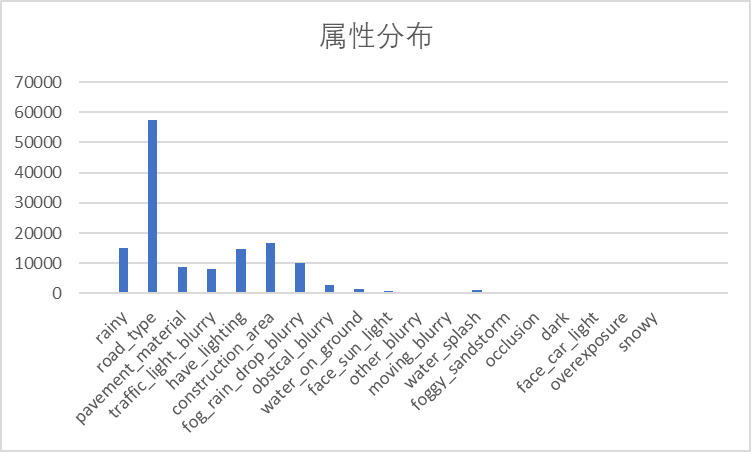

xper ODD
Summarize
Before the data
|
Module |
Sub -module |
To be clarified |
|
Post -treatment |
Debouncer |
|
|
Failure |
|
|
|
risk |
WR perception model accuracy and generalization |
|
|
Verification and test after the plan is completed |
|
|
|
timeline |
|
VIPER-BLOCK algorithm module diagram
The purpose is to display the Enter, output, sort out the working package, and display the logic link of the self -designed Module

MPC3 Blindness Receate the link diagram
Purpose, evaluate ENTER, whether state still needs

enter
PDM: Predictive maintenance sensor
SOBEL: Edge detection operator
Luma: The lightness parameters returned by the camera
Smoke sensor (not found reading)
Wiper wiper sensor (not found to read the code)
state
emmisionTestMode
suppresionMode
Data distribution

DATA Distribution is unreasonable
Important category (block -related) without full data
PROPOSAL: Use GAN to generate simulation data to push samples